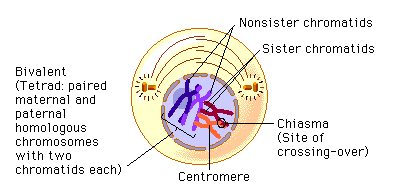
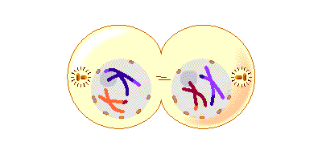
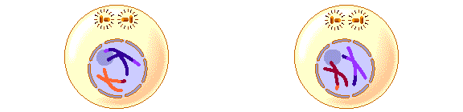
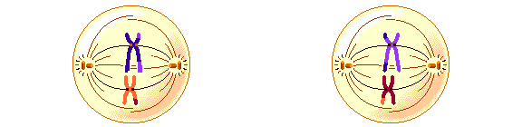
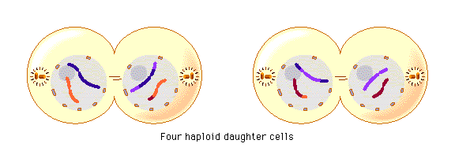

Biology Teaching Tool
Meiosis
Meiosis is a type of cell division required for the process of sexual reproduction.It only occurs in sex cells and not in somatic cells.
It consists of nine steps as opposed to mitosis which consists of only four.
The steps in Meiosis are as follows:
Interphase 1
Interphase 1 is the first stage of mitosis and it consists of the mother cell duplicating its DNA.
-->This stage occurs both in meiosis and mitosis.
-->It is also the longest stage.
Using this video link you can explore the step of interphase 1 in more detail.
Prophase 1
Prophase 1 is the second stage of meiosis and consists of:
-->The copied chromosones condense into x shaped structures.
-->The chromosomes then exchange bits of DNA in a process called recombination or crossing over.
-->This step occours in both mitosis and meiosis but in mitosis the "crossing over" does not occur.
-->Spindle fibers form and the nuclear envelope starts to dissapear.

Metaphase 1
Metaphase 1 is the third stage of meiosis and consists of:
-->The centrioles are now on the poles of the cell.
-->The homologous pairs of chromosomes arrange themselves along the metaphase plate.
-->Meiotic spindle fibers attach to one chromosome of each pair.

Anaphase 1
Anaphase 1 is the fourth stage of meiosis and consists of:
-->Each of the chromosomes are pulled apart to opposite poles of the cell by the meiotic spindle fibers.

Telophase and cytokenisis
Telophase and cytokenisis are the fifth step of meiosis and consist of :
-->The chromosomes decondense and two new nuclear membranes form.
-->Then them middle of the cell pinches and eventually splits into two diploid cells.

For more information on Telophase and cytokinesis, use this link.
There is NO interphase 2!
Prophase 2
Prophase 2 is the sixth step in meiosis and is very similar to prophase in mitosis.It consists of:
-->The chromosomes condense into x shaped structures
Crossing Over does not occour!
-->Spindle fibers form and the nuclear envelope starts to dissapear.
This happens in both diploid cells.

Metaphase 2
Metaphase 2 is the seventh step of meiosis and is very similar to Metaphase 1, it consists of:
-->The centrioles are now on the opposite poles of the cell.
-->The chromosomes arrange themselves on the metaphase plate.
-->The spindle fibers attach to each sister chromatid.

Anaphase 2
Anaphase 2 is the eight step of meiosis it is very similar to Anaphase 1 and it consists of:
-->Each chromatid is pulled to their respective side of the cell.

Telophase and cytokinesis
Telophase and cytokenisis are the ninth and last step of meiosis, they consist of:
-->The chromosomes decondense and two new nuclear membranes form.
-->The cell pinches in the middle and eventually splits into two cells.

For more information on Telophase and cytokinesis use this link.
The result is : 4 Haploid Cells
.Differences to Mitosis!
Meiosis is in general fairly similar to mitosis but with a few key differences.
The most key difference is that meiosis results in 4 non identical daughter cells,
while mitosis results in two genetically identical daughter cells.
To find out more about the differences between meiosis and mitosis, use this link.